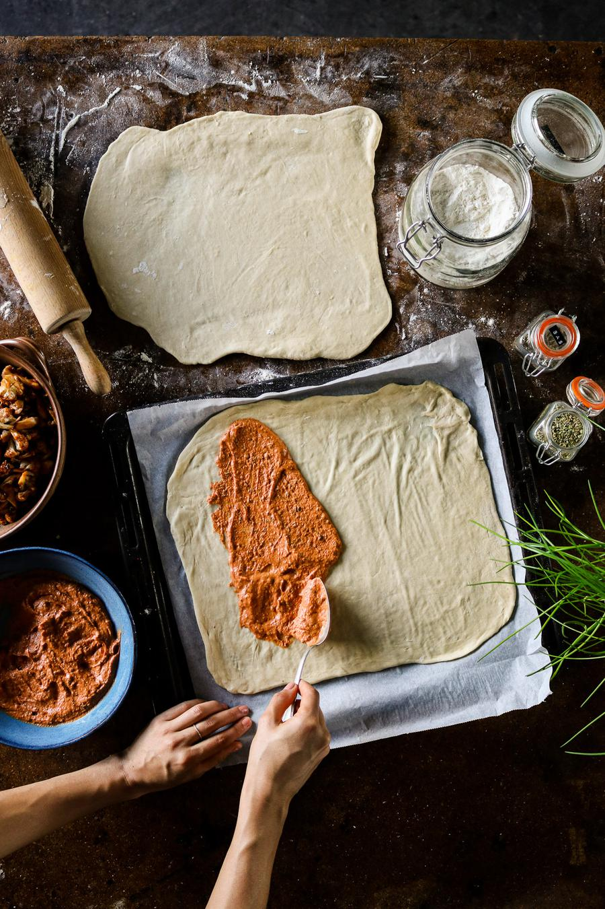
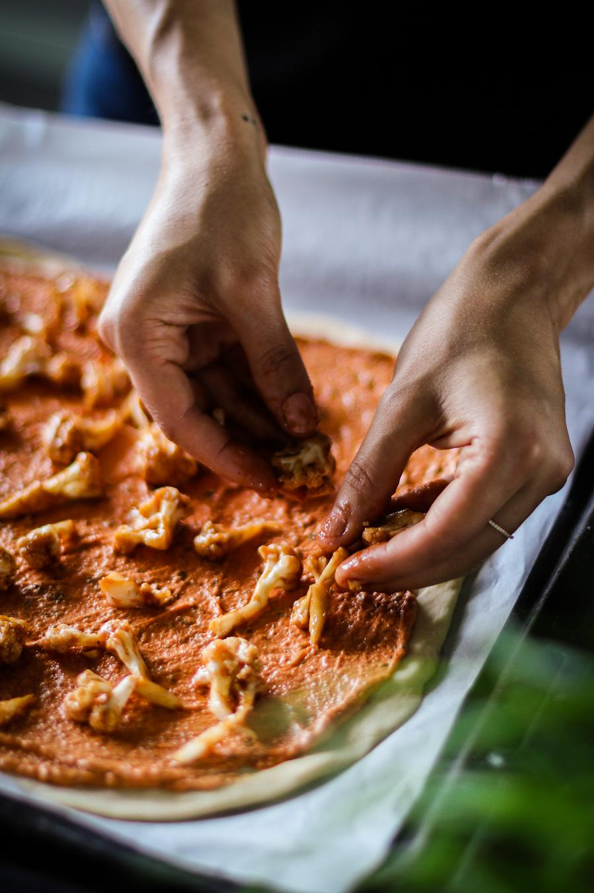
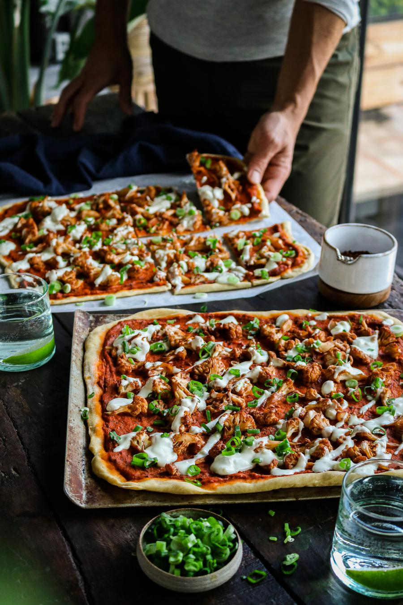

BBQ Cauliflower Pizza

- 🍽️Servings: 4
- 🍝Total time: 1 hr+10 min
- ⏱️Prep time: 30 min
- 🧑🏼🍳Cook time: 40 min
Ingredients
Pizza dough
- 2½ cups + 2 Tbsp (328 g) self-rising flour†
- 1 cup (240 mL) water
- 2 Tbsp (30 mL) olive oil
- 1 tsp (6 g) salt
BBQ cauliflower
- ½ head cauliflower, broken into florets
- ¾ cup (180 mL) BBQ sauce (or less for a milder BBQ taste)
- ½ tsp garlic powder
- ½ tsp onion powder
Pizza sauce
- ¾ cup (184 g) hummus‡
- ⅓ cup (87 g) canned tomato paste
- 1 tsp (1 g) dried oregano
- 1 tsp (1 g) dried basil
- ½ tsp dried thyme
- ½ tsp salt
- ¼ tsp ground black pepper
Garlic yogurt sauce
- ¾ cup (180 mL) unsweetened soy yogurt††
- 2 cloves garlic, crushed
- ¼ tsp salt
Optional garnish
Directions
- Combine all of the pizza dough ingredients in a large bowl and mix until well combined.
- Transfer to a floured surface and knead until you have a smooth, firm dough. Add a sprinkle of flour if too wet, or a small splash of water if too dry.
- Cover the dough with a clean kitchen towel and let it rest for about 20 minutes.
- Preheat the oven to 430°F (220°C). Add the cauliflower florets to a lined baking tray.
- To a small bowl, mix together the BBQ sauce, garlic powder, and onion powder. Pour half of the sauce over the florets, and toss to coat. Reserve the other half of the BBQ sauce for later.
- Bake the BBQ cauliflower florets for 20 minutes, flipping once halfway.
- In a medium bowl, mix together the hummus, tomato paste, oregano, basil, thyme, salt, and pepper.
- Lightly coat a work surface with flour. Divide the dough into two balls, as this recipe makes two large pizza crusts.
- Use a rolling pin to roll out the dough to the size of your baking tray - ours was 25 x 35 cm*.

- Divide the hummus-based pizza sauce over both pizza bases, and spread it out evenly. Leave about 1 cm around the edges of the pizza uncovered for the crust.
- When the cauliflower is removed from the oven, pour over the remaining BBQ sauce. Toss to coat.
- Divide and distribute the BBQ cauliflower florets over top of both pizzas.

- Bake the pizzas in the preheated oven for 20 minutes, or until the crust is lightly golden. Rotate the position of the pizzas in the oven once at the halfway point.
- Meanwhile, combine the yogurt, garlic, and salt in a bowl.
- When the pizzas are ready, drizzle some of the garlic yogurt sauce on top, and sprinkle with sliced green onion, if desired. Enjoy!

Notes
- † Self-rising flour is regular all-purpose flour, but with baking powder, and sometimes salt added to it. Self-rising flour can be found at most grocery stores located near the regular flour.
- ‡ We used spicy hummus, but you could try other flavours that are available to you.
- †† Nutrition tip: aim to use a plant-based yogurt that is fortified with calcium.
- * If the rolled pizza dough isn't cooperating - either because it's not moulding into the shape you want, or if it rips - simply knead it a few more times until smooth, and try again. Keep your surface and rolling pin well-floured, so it doesn't stick.
Storage
- Best to enjoy immediately.
- The pizza can be stored in an airtight container in the fridge for up to 3 days.